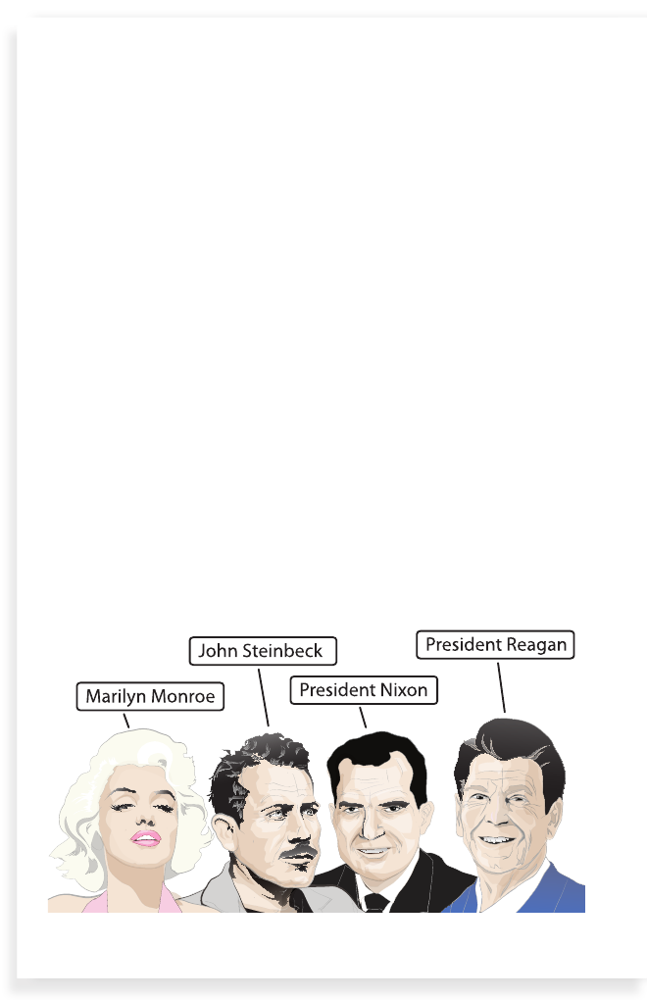

Golden Dreams
16
Few people lived in California before gold was found in
1848. But thousands of people moved to the state during the
gold rush. Everyone had hopes and dreams. Some wanted
to find gold and be rich. Others wanted to start new lives in
a new place. Some started businesses or farmed.
The gold rush changed California in many ways. To begin
with, people around the world heard that dreams came true
there. More people moved to the state, and they worked
hard even if they did not strike gold.
A lot of people from California became famous or important.
For example, some were explorers and inventors. Others
were writers and singers. Many were actors and actresses.
California even had two residents who became presidents!
17
18
Several famous Californians
18